- ＨＯＭＥ
- >
- 部活動
- >
- 弓道部ＴＯＰＩＣＳ
- >
- 弓道部 令和５年度までの成績
弓道部 令和５年度までの成績
令和５年度
現在１年生２３名、２年生２５名、３年生２１名で活動しています。
試合成績
3月22日（金）～24日（日）
第20回中日本高等学校弓道大会（静岡県藤枝市）
残念ながら男子５人制・３人制ともに予選敗退となりました。
この経験をもとに今後も一生懸命お稽古をしていきます。
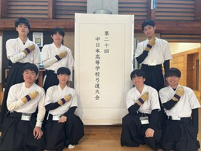
2月4日（日）
令和５年度京都府公立高等学校弓道大会
女子団体の部優勝
Aチーム
2年1組 森 愛奈
2年6組 池永 未来
2年7組 中久保 弥亜
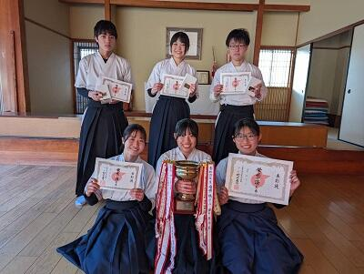
男子個人の部 第2位 1年9組 西村 天志
男子個人の部 第5位 2年8組 中野 葵一郎
女子個人の部 第2位 2年2組 市川 真子
以上入賞をおさめました。
１１月５日（日）
第２９回 京都市スポーツ協会会長杯弓道大会
男子の部ベスト１６ １年１組 鴉 瑞貴
女子の部優勝 ２年１組 森 愛奈
入賞しました。
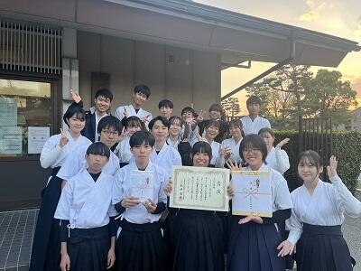
10月29日（日）
令和５年度 全国高等学校弓道選抜大会京都府団体２次予選会
兼 近畿高等学校弓道選抜大会京都府団体２次予選会
男子の部 第２位
２年５組 髙橋 昂佑
２年６組 山沖 和雅
２年８組 中野 葵一郎
２年９組 船岡 聖名
入賞しました。
11月26日(日)に大阪市で行われる第31回近畿高等学校弓道選抜大会に出場します。
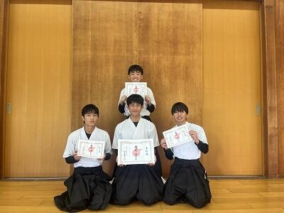
令和５年 ６月４日（土）
令和５年度 全国高等学校総合体育大会弓道大会京都府個人２次予選会
兼 近畿高等学校弓道大会京都府個人予選会
男子個人の部 第10位
3年8組 伊藤 壮志
入賞しました。
7月22日(土)に滋賀県彦根市で行われる第76回近畿高等学校弓道大会に出場します。
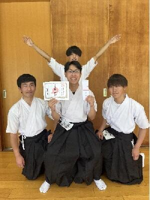
令和５年 ５月１３日（土）
第77回京都府総合体育大会弓道大会
兼 全国高等学校総合体育大会弓道大会京都府団体1次予選会
男子団体の部 第3位
3年2組 川島 蒼生
3年8組 伊藤 壮志、西村 晴琉、
3年9組 生湯 大輝、林 駿太、吉田 純也
入賞しました。
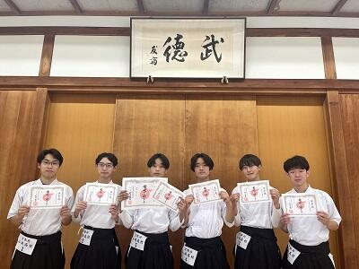
6名は、全国高校総体及び近畿高等学校弓道大会出場をかけて、
6月11日(日)に行われる2次予選に出場します。
令和５年 ４月２３日（日）
京都府公立高等学校弓道大会
男子個人の部 第４位
３年９組 生湯大輝
入賞しました。
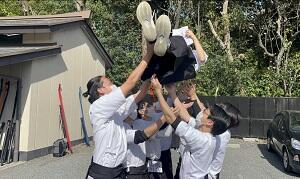
令和４年度
現在１年生２７名、２年生２１名、３年生２３名で活動しています。
試合成績
令和５年 ２月５日（日）
京都府公立高等学校弓道大会
男子団体の部 第３位
２年９組 吉田 純也
２年７組 西村 晴琉
２年９組 林 駿太
女子個人の部 第５位
２年３組 徳光 杏咲
女子個人の部 第６位
１年４組 森 愛奈
入賞しました。
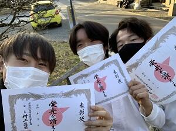
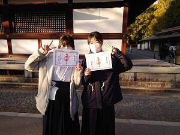
10月30日（日）
全国選抜大会京都府団体２次予選会
女子団体の部 第3位
２年１組 松村 雪那・光瀬 優、
２年３組 橋本 亜優、
２年４組 岡本 七美
入賞しました。
４名は、11月20日（日）に和歌山県田辺市で行われる
近畿高等学校弓道選抜大会に出場します。
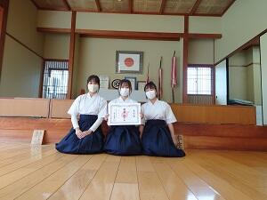
10月23日（日）
全国選抜大会京都府個人予選会
男子個人の部 第3位 ２年９組 林 駿太、
第4位 ２年９組 生湯 大輝
入賞しました。
11月19日（土）に和歌山県田辺市で行われる近畿高等学校弓道選抜大会に出場します。
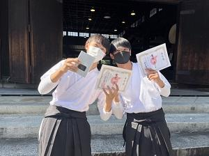
９月４日（日)
京都府高等学校弓道選手権大会
第７位 ２年３組 橋本亜優
第８位 １年４組 池永光来
入賞しました。
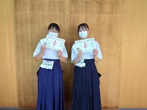
６月５日（日)
全国高校総体京都府個人２次予選会
男子個人の部 第１０位に２－８松井賢仁
女子個人の部 第 ７位に３－１松尾香奈
入賞しました。
７月２３日に京都市武道センターで行われる近畿高等学校弓道大会に出場します。
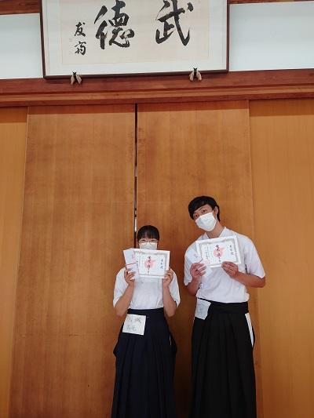
5月14日（日）
京都府高校総体兼全国高校総体京都府団体１次予選会
女子団体の部で第３位（３－９森宗・並河、３－２長谷川、３－１松尾、３－７田中、３－３大家）に入賞
７月２４日に京都市武道センターで行われる近畿高等学校弓道大会への出場を決めました。
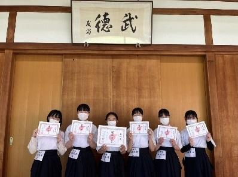
４月24日（日）
春季高等学校弓道大会
男子団体の部で優勝（２－１川島・川原、２－７伊藤）
男子個人の部で第５位（２－７伊藤）、第８位（２－１川原）に入賞
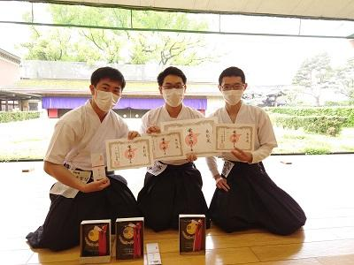
令和３年度
現在の部員数 １年生 ２３名 ２年生２４名 ３年生２６名 計７３名
試合成績
12月23日（木）～25日（土）
全国高等学校弓道選抜大会（茨城県水戸市）
残念ながら個人・団体ともに予選敗退となりました。
この経験をもとに今後も一生懸命お稽古をしていきます。

11月20日（土）21日（日）
近畿高等学校弓道選抜大会（奈良県橿原市）
残念ながら個人・団体ともに予選敗退となりました。
この経験をもとに全国選抜大会に向けて一生懸命お稽古をしていきます。
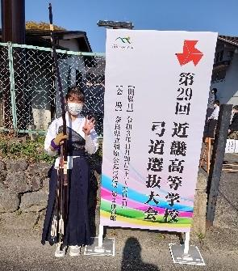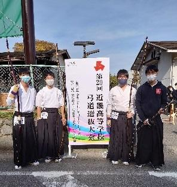
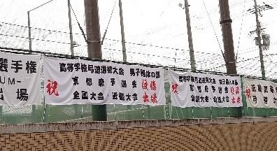
10月31日（日）
全国選抜兼近畿選抜京都府団体予選会
２年１組 川口 零生、２年３組 中島 遵人、林 結力、２年７組 高橋 蓮
男子団体の部で優勝
１１月２０・２１日に奈良県橿原市で行われる近畿高等学校弓道選抜大会
１２月２３～２５日に茨城県水戸市で行われる全国高等学校弓道選抜大会
に出場します。
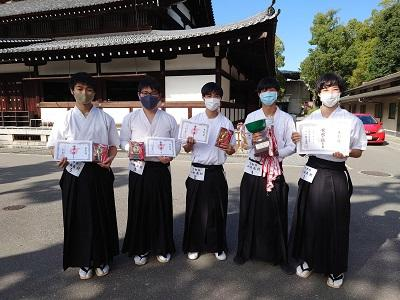
10月24日（日）
全国選抜兼近畿選抜京都府個人予選会
２年２組 長谷川想 女子個人の部で優勝
１１月２０・２１日に奈良県橿原市で行われる近畿高等学校弓道選抜大会
１２月２３～２５日に茨城県水戸市で行われる全国高等学校弓道選抜大会
に出場します。
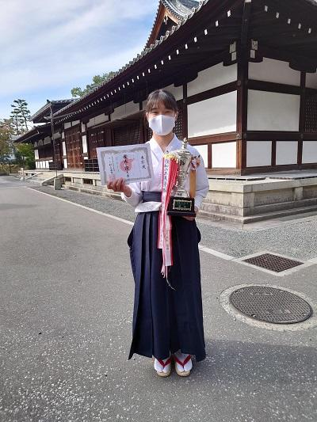
６月５日（土）
全国高校総体京都府個人２次予選会
３年７組 山田 卓実 ８位入賞
７月１７日（土）・１８日（日）に兵庫県明石市で行われる
第７４回近畿高等学校弓道大会男子個人の部に出場することになりました。
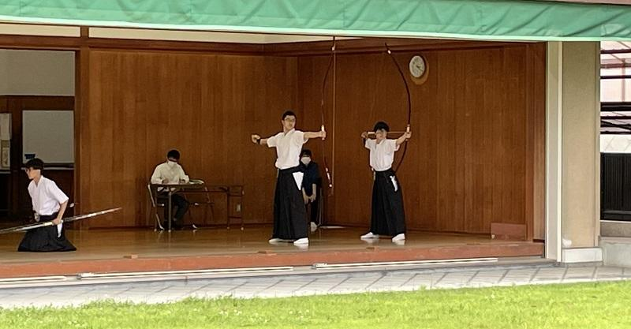 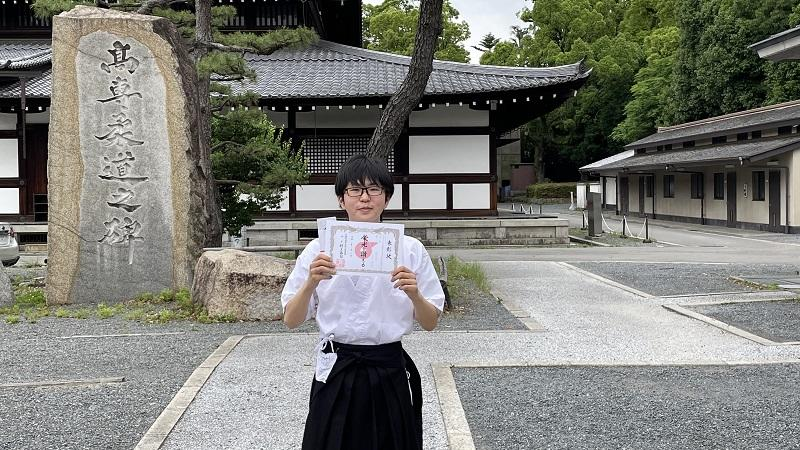
７月１７日（土）
第７４回近畿高等学校弓道大会男子個人の部（兵庫県明石市）
３年７組 山田 卓実 出場
残念ながら予選敗退でしたが、ベストを尽くして臨めました。

令和２年度
現在の部員数 １年生２５名、２年生２６名、３年生２１名 計７２名
試合成績
令和２年度
令和２年11月１日（日）
全国高等学校弓道選抜大会京都府団体２次予選会
男子団体 ３位 兼田 力（２年）、内海 颯太（２年）、小林 智紀（２年）
女子団体 ３位 鈎 ゆめ（２年）、大島 紗季（２年）、南海 優里奈（２年）
これにより、男子団体が近畿大会への出場権を獲得しました。


令和２年10月25日（日）
近畿高等学校弓道選抜大会京都個人予選会
女子個人 ４位 鈎 ゆめ（２年）
これにより、女子個人が近畿大会への出場権を獲得しました。
令和２年９月６日（日）
京都府高等学校弓道選手権大会
男子個人 ４位 兼田 力
女子個人 ５位 奥村 ゆき乃
令和２年８月２日（日）
令和２年度京都府高等学校３年生夏季弓道大会
男子個人 ４位 内海 颯太（２年）
６位 嶋崎 皓太（３年）
女子個人 ６位 中西 李（３年）
８位 横澤 百華（３年）
10位 田中 愛里（３年）
男子団体 ２位 井上 司、内海 颯太、嶋崎 皓太
女子団体 ４位 中西 李、田中 愛里、眞門 千幸
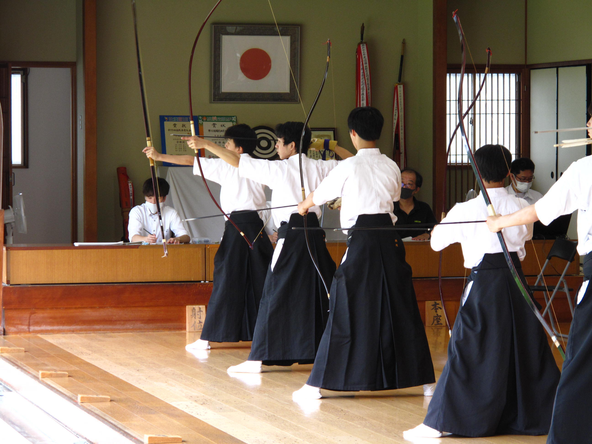 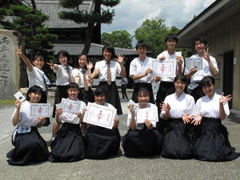
令和元年度部員数 １年生２７名、２年生２１名、３年生７名 計５５名
令和２年２月１１日（火）
京都府公立高校大会
男子個人 優勝 兼田 力（１年）
女子個人 優勝 鈎 ゆめ（１年）
２位 北村 周子（２年）
６位 遠田 真由（２年）
男子団体 ３位 嶋崎 皓太、兼田 力、檀上 祐希
女子団体 優勝 北村 周子、遠田 真由、眞門 千幸
３位 中西 李、谷口 登志子、田中 愛里
１２月２４日（火）・２５日（水）
第３８回全国高等学校弓道選抜大会（群馬県前橋市）
残念ながら予選落ちに終わりました。
２月以降の試合に向けてまた日々の練習に取り組んでいきます。

１１月２４日（日）
第２７回近畿高等学校弓道選抜大会（大阪城公園弓道場）
残念ながら予選落ちに終わりましたが、
女子は１２月２３日（月）から群馬県前橋市で行われる
第３８回全国高等学校弓道選抜大会へ向けて日々練習を頑張っています。

近畿 女子

近畿 男子

集合 近畿
１１月４日（月）
全国高等学校弓道選抜大会京都府団体２次予選会
女子団体が 優勝 （２年生 北村 周子・井上 果歩・小熊 香穂・眞門 千幸）

男子団体が 第２位 （２年生 嶋崎 皓太・檀上 祐希・井上 司、１年生 兼田 力）に入賞！

これにより、男女ともに１１月２４日に大阪城公園弓道場で行われる
第２７回近畿高等学校弓道選抜大会への出場が決定しました。
また、女子は１２月２３日（月）から群馬県前橋市で行われる
第３８回全国高等学校弓道選抜大会への出場も決定しました。
それぞれの大会に向けて、更に日々の練習を頑張っていきます。

９月１５日（日）
全国高等学校弓道選抜大会京都府団体１次予選会 において
女子の部 第５位、男子の部 第３位 に入賞し、１１月４日に行われる２次予選会への進出が決定しました。
９月７日（土）
京都府高等学校弓道選手権大会 において、
女子個人の部で ２年５組 井上 果歩 さんが 第１位になりました。
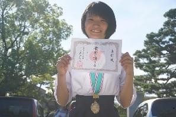
６月１５日
令和元年度国民体育大会弓道競技少年の部 京都府強化指定選手 に 本校の弓道部から２名選ばれました。
２年５組 檀上祐希 ２年８組 嶋崎皓太
（８月１７日・１８日に奈良県橿原市にて開催される近畿ブロック大会に参加します。）
６月２日（日） 全国高等学校総合体育大会弓道大会京都府個人２次予選会
兼 近畿高等学校弓道大会京都府個人予選会
女子個人の部 第４位 ２年 遠田 真由
（7月に和歌山県田辺市で行われる近畿高等学校弓道大会に出場します。）

４月２８日（日） 春季高等学校弓道大会
女子個人の部 第７位 ２年 辻 沙幸
２次予選進出 男子３名 女子４名

平成３０年度部員数 １年生２２名、２年生８名、３年生１６名 計４６名
11月3日（土） 全国高等学校弓道選抜大会京都府団体２次予選会
女子団体 第２位
※11月25日（日）近畿高等学校弓道選抜大会に出場決定
（東洋大姫路高校にて開催）
優勝に向けてがんばります！
10月28日（日） 全国高等学校弓道選抜大会京都府個人予選会
女子個人の部 第８位 ２年 長村 有華
９月１６日（日） 全国高等学校弓道選抜大会京都府団体１次予選会
女子団体 第５位 （団体２次予選進出）
９月８日（土） 京都府高等学校弓道選手権大会
女子個人の部 優勝 ２年 浦部 一華 （８射皆中）
６月１０日（日） 全国総体兼近畿大会団体２次予選会
女子団体 第２位 （近畿大会出場決定）
５月１９日（土） 京都総体兼全国総体団体１次予選会
女子団体 第２位 （団体２次予選進出）
５月１３日（日） 全国総体兼近畿大会個人１次予選会
２次予選進出 男子３名 女子４名
井上司
カテゴリ一覧
主要リンク